Snow reports · Guides
Daily snow reports for skiers: where the snow is, what is coming and where to ski, from the SnowScope snow map and measuring stations. Every number comes from that day's data.
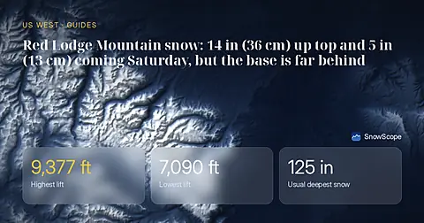
Red Lodge Mountain in Montana's Beartooths: snow today, the weekend storm, how far behind a normal year it is, and what December usually brings.

Reiteralm near Schladming has its early snow. Today's depth, what a usual December and Christmas bring, and how this quiet family area fits into Ski amadé.

Slovenia's Vogel ski area got a big storm this week. Today's snow, why the Julian Alps catch these storms, and what usually happens next in December.

Tahoe's resorts are far ahead of a normal year after the mid-November storms. Christmas odds for Kirkwood, Sugar Bowl, Palisades, Heavenly and Northstar.
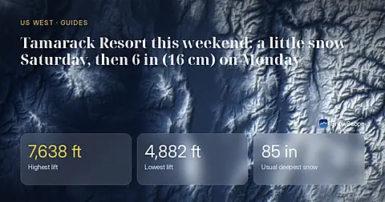
Tamarack in Idaho's West Mountains: today's snow, the weekend day by day, the Monday storm, and how this start compares with a normal year.

Mammoth has 19 in (48 cm) on its upper slopes and sits close to a normal late-November base. What each December week usually brings, from 46 winters.
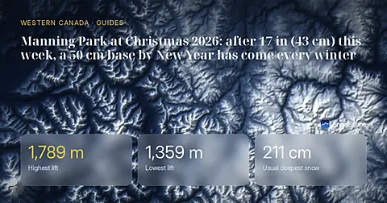
Manning Park Resort between Hope and Princeton just got a storm. Today's snow, the Christmas odds from 46 winters, and planning a holiday trip from Vancouver.
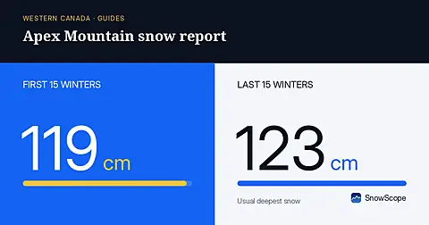
Apex Mountain Resort in the Okanagan: snow today, the days ahead, how it compares with a normal late November, and what December and Christmas usually look like.

Colorado's big resorts go into December with a thin base. How far behind each one is, what a normal December adds, and where to go first.

Snow depth in Chamonix on 27 November, Christmas odds from 46 winters at the Grands Montets and Brévent, and why the valley floor is a different story.

Mount Timothy near 100 Mile House: today's snow, the forecast, how far behind a normal year it is, and what December usually brings to this Cariboo community hill.
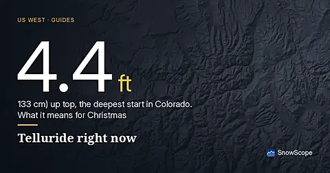
Telluride's upper slopes hold the most snow of any big Colorado resort today. Christmas odds from 46 winters, and where the snow is best.
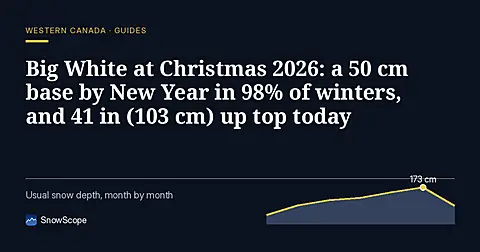
Big White near Kelowna is one of the most reliable Christmas resorts in Canada. Today's snow, the usual December 25, and planning the family week.

Jackson Hole has 18 in (45 cm) up top and 9 in (23 cm) on the way Saturday. What New Year's week usually looks like, and how to plan it.

Europe's highest ski resort starts December deep. How rare this is in 46 winters, what it means for December and Christmas, and where the best snow is.

Banff Sunshine, Lake Louise, Norquay, Nakiska and Castle Mountain compared for a December day trip from Calgary: snow today, how far behind normal, and what December usually adds.

Little and Big Cottonwood canyons and Park City for Saturday 28 and Sunday 29 November: today's snow, the weekend top-up, and how this start compares with a normal year.
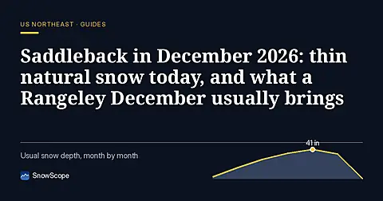
Saddleback Mountain near Rangeley, Maine: snow today, the coming days, and what 46 winters say about December and Christmas on one of New England's highest ski mountains.

Marmot Basin's snow today, the next days, and why this start is unusual for one of Canada's most reliable early-season mountains.

Mt. Hood shows how much a few hundred feet matter: today's snow at Timberline, Meadows, Skibowl and Mt. Bachelor, the next three days, and what December usually brings.

Tignes and the Espace Killy go into December far ahead of a normal year. What New Year's week usually looks like at 2,500 m, and how to plan it.

Koktokay could get about 13 cm, Hemu and Jiangjunshan about 8 cm by 4 December; Chongli, Yanqing and the Jilin resorts stay dry.

Northern Vermont gets its first real snow of the season over the Thanksgiving weekend. Resort by resort, north to south, and what is normal for early December.

Whistler Blackcomb's upper slopes hold 8.7 ft (266 cm) after a 4.6 ft (141 cm) three-day storm. What 46 winters say about Christmas, and why the valley is the only question.
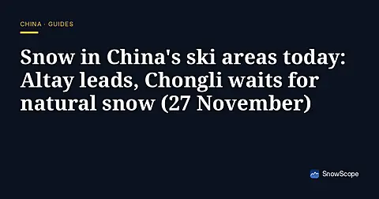
45 of 130 ski areas in northern China have natural snow today. Hemu has 70 cm, Koktokay 40 cm; around Chongli the natural snow is still under 10 cm.

Crystal, Stevens, Snoqualmie, Mt. Baker and White Pass after this week's storm: today's snow, the next three days, and what a normal December brings to each pass.

Snow on the upper slopes today: Kiroro 119 cm, Sapporo Kokusai 103 cm, Asahidake 61 cm, Niseko 31 cm, Furano 29 cm, Rusutsu 16 cm, and only light snow in the next 8 days.

A storm crosses central Japan on 28 and 29 November: rain on Saturday, then snow. Hakuba Happo-one gets about 62 cm on the upper slopes, Tsugaike 61 cm, Myoko Suginohara 57 cm.

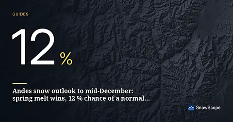
Snow outlook for the central and Patagonian Andes from 24 November to 14 December 2026, from the 50-member ECMWF ensemble, NOAA GEFS and NASA MODIS: snow line on the ground near 3,000 m, Portillo 40 % above normal, Bariloche and Chapelco almost nothing.
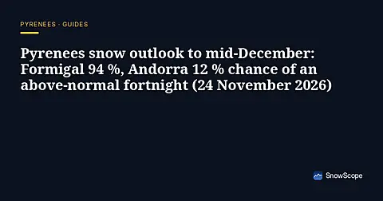
Pyrenees snow forecast for the next 3 weeks from the 50-member ECMWF ensemble, NOAA GEFS and NASA MODIS: a near-normal fortnight overall (19.1 cm against 18.3 cm), snowy in the west and centre, lean towards Andorra and Cerdanya. Snow line on the ground about 1,500 m.

Western US and Canada snow forecast for the next 3 weeks from the 50-member ECMWF ensemble, NOAA GEFS and NASA MODIS: Whistler median 82 in (210 cm) by 8 December, Mammoth 21 in (53 cm), Alta 14 in (35 cm), Vail 14 in (34 cm). Lake Louise is the lean spot at 12 %.
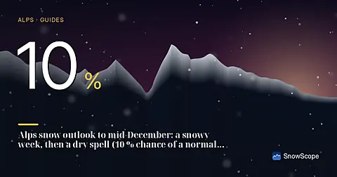
Alps snow forecast for the next 3 weeks from the 50-member ECMWF ensemble, NOAA GEFS and NASA MODIS: 19.1 cm of fresh snow on average this week (normal 17.8), then only 9 cm from 1 to 8 December (normal 21.9). Isola 2000 74 % above normal, Chamonix 6 %.

A science-based snow outlook to mid-December 2026 for five mountain ranges: the 50-member ECMWF ensemble for days 1-15, NOAA GEFS for days 16-21, NASA MODIS for the snow on the ground today. Chance of more snow than the 1991-2020 normal: Atlas 4 %, Alps 10 %, Pyrenees 46 %, US-Canada West 88 %, Andes 12 %.

Snow outlook for the High and Middle Atlas, 24 November to 14 December 2026: 50 ECMWF ensemble members for 15 days, NOAA GEFS for days 16-21, NASA MODIS snow cover today. Only 4 % of members beat the 1991-2020 normal; Oukaïmeden median 0 cm, M'Goun 8.3 cm in the wettest tenth.

Rosa Khutor above Krasnaya Polyana: usual snow by month at the base, mid-mountain and top over 34 winters, the December gamble and the trend.
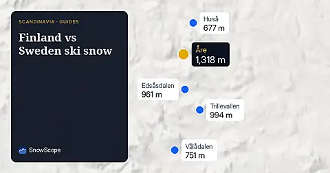
Finnish Lapland against the Swedish mountains: usual snow by month at eight resorts over 46 winters, who is losing snow and where it lies now.

How snow depth changes month by month at three top Dolomites resorts across 46 past winters, from base to summit.


Port del Comte sits 1744–2122 m above Solsona: natural snow depth peaks at 26–40 cm across the mountain, mostly in January and February. Data from 46 past winters.

The Mölltal glacier above Flattach: usual snow depth at the base, mid-mountain and the top from 46 past winters, from the first snow in September to the May skiing, and why the depth is a different world from the valley.

Tignes climbs from 1559 m to 3447 m across 46 past winters. Base: 117 cm peak. Mid-mountain: 216 cm. Glacier: 372 cm. Data from November 2026.

Hafjell above Lillehammer month by month: usual snow depth at the base, mid-mountain and the top from 46 past winters, the first snow, the deepest weeks and how the recent winters compare.

Kvitfjell's 46-winter snow record: when to expect deep snow for the speed races and spring skiing on Norway's Olympic downhill course.
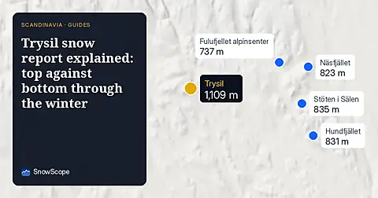
Why Trysil's snow report shows two very different numbers: usual depth at the base, mid-mountain and the top of Trysilfjellet from 46 past winters, month by month, and what it means for the runs you will ski.

Piau-Engaly sits at 1762 m with runs to 2527 m. Over 46 past winters, the usual peak depth is 88 cm at the base, 123 cm at mid-mountain and 159 cm at the top.

46 winters of snow history at Alpe d'Huez show peak depths of 52 cm at base, 184 cm mid-mountain, 440 cm at top. Data from 1980–2026.

The National Weather Service expects 10 to 20 inches in the Wasatch from Thursday to Saturday. Where Utah's snowpack stands against past winters, why Utah snow is lighter, and when to ski.

What the measured snow gauges say about the North Lake Tahoe storm, why the first snow is heavy and wet, and how Sugar Bowl, Northstar and Diamond Peak compare with 46 winters.

About 28 inches of new snow at Mammoth and 26 inches at June Mountain on 18-19 November. What the storm is, how it ranks against past winters, and the best days to go.

From 13 to 19 November 2026 Slovenia got the most snow and kept it; Serbia and Croatia had a deep but short white weekend; Montenegro only on Durmitor; Bulgaria almost none. The ranking, with links to each country report.

Only Borovets and Bansko have a trace of snow at the top today, 2 cm each. A week ago Borovets had 11 cm. Day by day, and the one snowy day in the forecast.

Tornik on Zlatibor had up to 39 cm on its upper slopes on 15 November 2026; by Wednesday it had melted. Kopaonik barely turned white. The week day by day and what comes next.

Savin Kuk above Žabljak picked up 22 cm of snow from 13 to 19 November and still has 6 cm today. Kolašin 1450 and 1600 are bare. The week day by day, and the next chances.

Seven independent ski areas in the West where an adult day ticket costs from $49 to $98.8 on weekdays, compared with the snow they usually have in December.

Pick a region, dates, budget and what matters; get every resort ranked with the likely snow at the start, the pass, hotel and food per person, chalets to book, and a game mode.

Up to 30 cm of snow fell on northern Velebit and Bjelolasica on Friday 13 November 2026. By Tuesday it was gone. Day by day, what the mountains kept, and when snow comes back.
Heavenly, Sierra-at-Tahoe and Mt. Rose have more snow on 19 November than in any winter since 1980-81. How much fell, the measured gauges, the weather behind it and the best days to go.

Snow is falling on Slovenia's ski mountains today: about 37 cm on Kanin and 21 cm on Krvavec. Where the snow lies, how it compares with past winters, and the next snowy day.

Alpine day passes from 36 EUR: nine resorts compared by price, kilometres of runs and the snow they usually hold, to find the best day of skiing for your money.

Pyrenees day passes from 46 EUR: six resorts in France, Spain and Andorra compared by price, then by the snow they usually have in December and January.

Glacier skiing from 68 EUR a day: we compared seven glaciers in France, Austria, Germany and Switzerland by price and by the snow they usually hold in December.
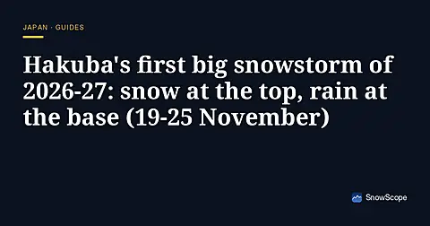
Hakuba Happo-one gets about 1.7 m of new snow at the top lift from 19 to 25 November, but rain at the base until 20 November. Day-by-day forecast at three heights.

Six days of skiing from 191 EUR: we ranked ten cheap ski weeks in Europe by price, then checked 46 past winters to see where the snow is reliable.

From 20 EUR on an opening weekend to 6-day passes before Christmas: a calendar of the cheapest early-season ski deals in the Alps for 2026, with the snow you can expect.

New snow forecast for 15 Japanese ski resorts from 20 to 25 November: Hakuba and Tsugaike lead with about 90 to 97 cm at the top, Niseko about 35 cm.

Only 3 of 318 snow stations in Japan had snow on the ground this morning. Here is where it is, what melted this week, and where the next snow falls.

Sestriere forecast for 23–29 November: 30 cm at the top, with a range of 15–44 cm. Wednesday 25 brings the peak snowfall.
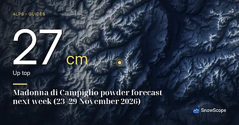
Fresh snow arrives at Madonna di Campiglio next week: 27 cm at the summit, with the heaviest falls on 25–27 November. Best day to ski is 26 November.

Val Gardena gets 11 cm at the top next week, most of it on 25–26 November. The base receives only 6 cm, suggesting a snow line on the lower slopes.

Cortina d'Ampezzo gets 13 cm at the summit next week (5–21 cm range), mostly on 25–26 November. Light refresh, not a base builder. Data from 16 November 2026.

Livigno's next week brings 19 cm median at the top (6–31 cm range), peaking Wednesday 25 and Thursday 26. Data from 16 November.

Courmayeur gets 26 cm of snow next week at 2700 m, with a range of 8–44 cm. Best days are 24–26 and 28–29 November. Forecast from 16 November 2026.
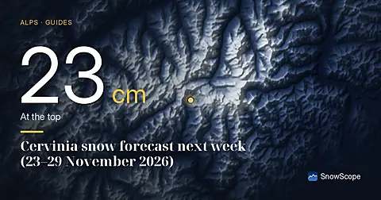
Next week Cervinia receives 23 cm at the top (3400 m), with Thursday 26 November as the peak snowfall day. Forecast from 16 November 2026.

Saalbach expects 17 cm mid-range at the top next week (23–29 Nov), with the best day on 29 Nov. Range 3–31 cm shows wide uncertainty.
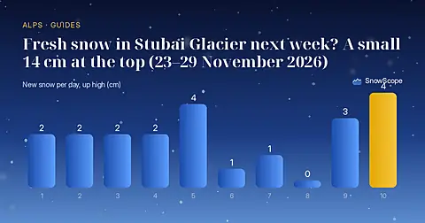
Stubai Glacier expects 14 cm at the top next week (23–29 Nov), with the best snow on Thursday 26 November. Data from 16 November.

Hintertux gets 14 cm at the top next week (23–29 Nov): a surface refresh on the glacier, not a powder storm. Data from 16 November.
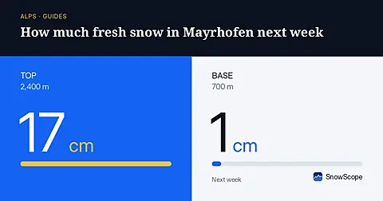
Mayrhofen forecast for 23–29 November: top gets 17 cm (2–31 cm range), best day is 29 November with 5–10 cm. Data from 16 November.

Kitzbühel forecast for 23–29 November: 18 cm at the top, with Friday and Sunday bringing the most snow. Data from 16 November.

Obergurgl will get 13 cm at the top next week (23–29 Nov), with the best day on 26 Nov. Light refresh, not a storm.

Sölden forecast: 13 cm at 3100 m next week, peaking Thursday 26 November. Upper slopes hold most snow; base gets 8 cm. Data from 16 November 2026.

Lech-Zürs faces a split forecast: modest snow this week, then 30 cm next week (7–53 cm range). Best day is Sunday 29 November.
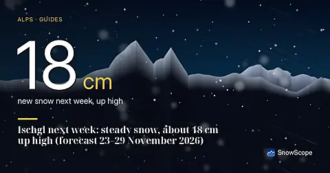
Next week Ischgl's top slopes collect 18 cm (forecast 23–29 Nov). Thursday 26 is the heaviest day. Data from 16 November 2026.

St. Anton forecast for 23–29 November: 25 cm upper slopes, 25 cm mid-mountain, 18 cm base. Sunday 29 November is best. Data from 16 November.
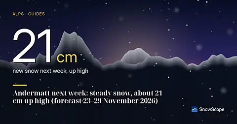
Andermatt forecast for 23–29 November: 21 cm at the top, 19 cm mid-mountain, 15 cm at the base. Best snow on Wednesday 25 November.
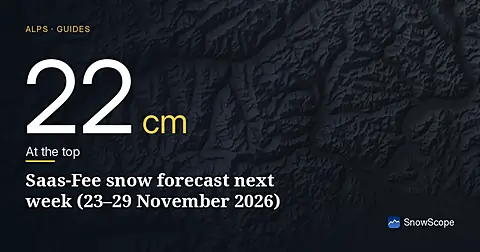
Saas-Fee gets 22 cm on upper slopes next week, with Thursday 26 November the heaviest day. Forecast from 16 November 2026.

Engelberg snow forecast for 23–29 November 2026: 22 cm at the top (2–42 cm), 7 cm at the base, snowiest day Thursday 26 November, with neighbours compared.

Laax forecast 23–29 Nov: 21 cm at the top, 17 cm mid-mountain, 6 cm at base. Thursday 26 is the heaviest day.

Davos forecast for 23–29 November: 16 cm at the top, Thursday 26 November heaviest. Snow line sits high; best on Parsenn.

St. Moritz forecast for 23–29 November: 19 cm at the summit, 17 cm mid-mountain, 16 cm at base. Best snow Wednesday 25 through Friday 27.

Verbier's upper slopes get 24 cm next week (5–42 cm range). Thursday 26 November is the peak day. Forecast from 16 November.

Zermatt gets 23 cm of snow next week at 3800 m, with Thursday 26 November the best day. Forecast from 16 November 2026.

Next week Megève's top slopes will see 27 cm of snow (range 9–46 cm). Wednesday 25 brings the peak, with 7 cm. Data from 16 November.

Next week at Flaine: 27 cm forecast at the top (9–46 cm range), with four key snow days. Data from 16 November.
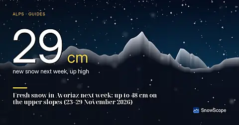
Avoriaz forecast for 23–29 November: 29 cm at the top (range 9–48 cm), 27 cm mid-mountain, 17 cm at base. Best days: 24, 25, 26, 29 November.

Serre Chevalier forecast for 23–29 November: 47 cm at the top, 40 cm at mid-mountain, 18 cm at the base. Wednesday 25 November is the peak day.

La Grave's top slopes near 3400 m will collect 49 cm in the week of 23–29 November 2026, with Wednesday 25 as the peak day. Data from 16 November.

Les 2 Alpes forecast for 23–29 November: 47 cm at 3200 m, 41 cm at 2400 m, 14 cm at base. Wednesday 25 is the peak day.

Alpe d'Huez forecast for 23–29 November: 40 cm at the top, 35 cm mid-mountain. Wednesday 25 is the key day. Data from 16 November.

La Plagne's upper slopes forecast 28 cm of fresh snow next week (23–29 Nov), building on 99 cm from earlier. Data from 16 November 2026.

Les Arcs forecast for 23–29 November: 29 cm at the top, 26 cm mid-mountain, 12 cm at the base. Data from 16 November.

Méribel's upper slopes collect 28 cm next week (23–29 Nov); most falls Wed–Thu and Sun. Data from 16 Nov.

Courchevel gets 27 cm at the top 23–29 November, with Wednesday 25 as the heaviest day. Forecast from 16 November.

Val Thorens receives 30 cm at the summit next week (23–29 Nov), with the best day on 25 Nov. Snow data from 16 November.

Tignes will collect 29 cm at the top next week, with Thursday 26 November as the snowiest day. Forecast from 16 November.

Val d'Isère gets 28 cm next week (10–46 cm range) with Thursday 26 November as the peak snowfall day. Forecast from 16 November 2026.
Chamonix's next week brings 27 cm at the top (8–46 cm range), peaking on Wednesday 25 November. Forecast for 23–29 November 2026.

Beaver Mountain offers fixed-price tickets at $75 with no peak surcharge. Early December is often thin; aim for mid-month or later when snow is more reliable.
Bridger Bowl charges $86 online for 2026/27. Mid-mountain has 20 in (50 cm) on 15 December in half of winters; Christmas week odds improve to 78 %.

High Colorado ski area holds weekday lift ticket at $49 for 2026-27; mid-mountain snow reaches 26 in (66 cm) by mid-December in a typical winter. Data from 13 November 2026.
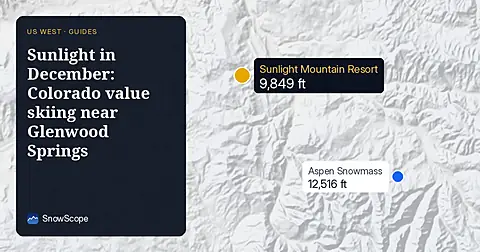
Sunlight near Glenwood Springs faces an early-season gamble in December. By mid-month you can expect 26 in (67 cm) at mid-mountain, though only 72% of winters reach that depth.

Timberline's mid-mountain has 52 in (132 cm) typical snow on 15 December. Upper slopes reach 58 in (147 cm). Full-day tickets start at $129 off-peak.

Seven US West ski areas offer weekday discounts in December. Ski Cooper saves $50 per day Monday-Friday, Mt. Baker $16.62 off-peak. Mid-mountain snow odds range from 70% to 93% by December 15.
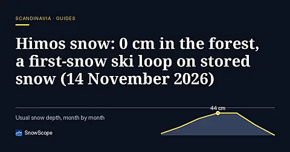
Himos opens a prepared cross-country loop on 14 November as natural snow remains absent from the forest floor around this Finnish resort.

For a December trip, is the Indy Pass worth $419? We checked seven member areas and their snow odds: the pass pays on the third area visited.

Lofsdalen has 6–8 cm across the valley as of 13 November 2026, with 7 cm forecast over the next week and no rain threat.

Lookout Pass midweek ticket costs $63 reserved ahead. By mid-December the upper mountain usually holds 30-37 in (75-95 cm). Data from 13 November 2026.
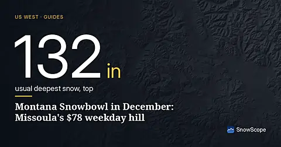
Local Missoula resort near 7,530 ft (2,296 m) with $78 weekday lift tickets. Mid and top slopes typically hold 30–37 in (76–93 cm) by mid-December. Data from 13 November 2026.

On 14 November, Narvikfjellet has about 50 cm at the top and nothing at sea level. Snow depths vary with height by 1,000 metres.

Røros sits at 630 m on a mountain plateau. On 13 November, 11 cm lay measured at the weather station—thin but real winter snow for the sled-dog season.